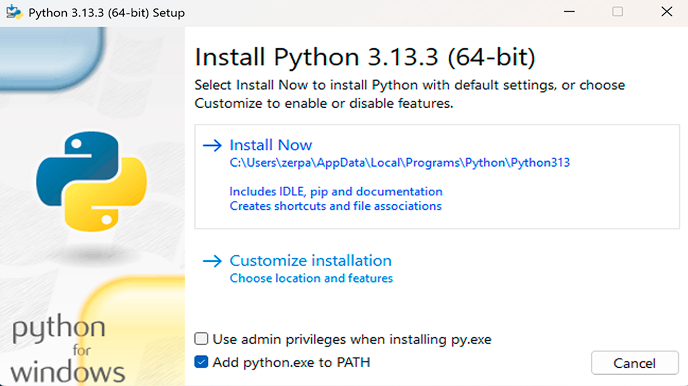
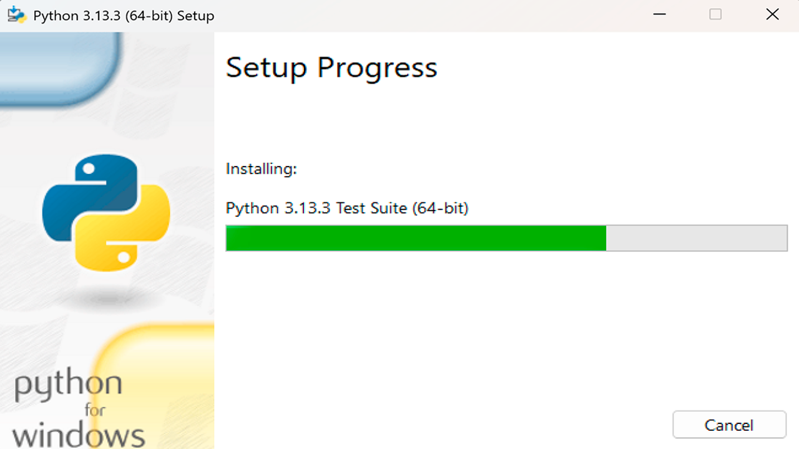
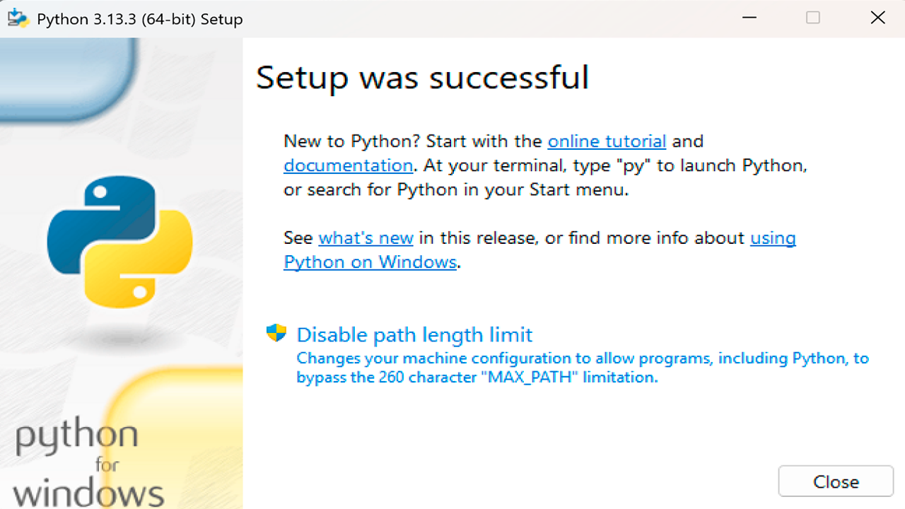
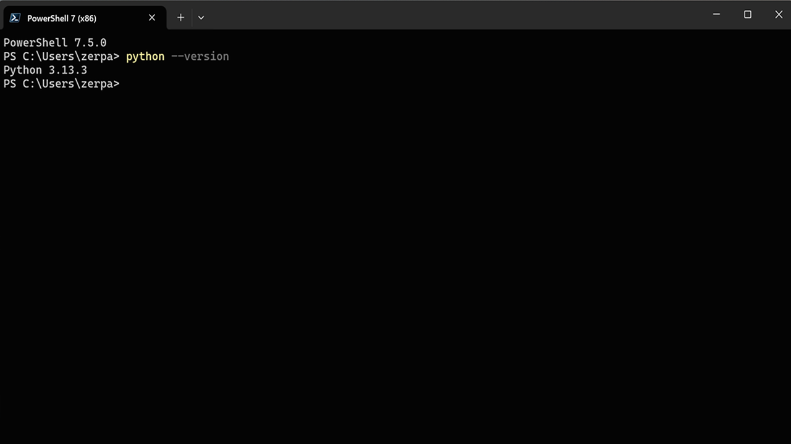
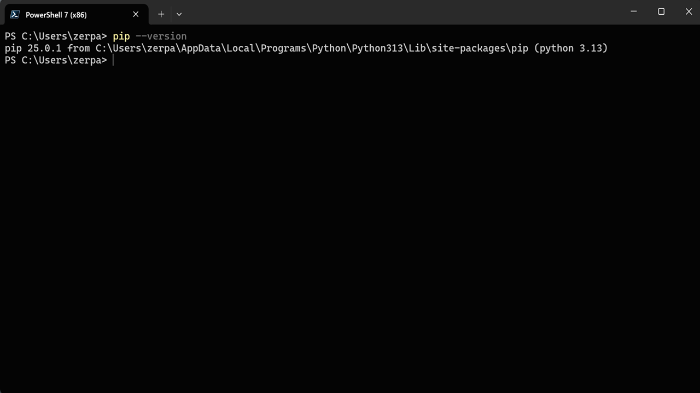

Python: ¿Qué es y para qué sirve?
April 15, 2025 Lenguaje de programacion Aplicaciones Desarrollador web Software

Python es un lenguaje de programación de alto nivel, adaptable y con una sintaxis nítida y comprensible. Esto lo hace una magnífica elección tanto para novatos como para programadores con experiencia.
¿Qué lo hace tan popular?
- Facilidad de aprendizaje: Su sintaxis simple se asemeja al lenguaje natural, facilitando la comprensión y el desarrollo de código.
- Versatilidad: Python se utiliza en una amplia gama de aplicaciones.
- Gran comunidad y soporte: Cuenta con una comunidad activa que ofrece abundante documentación, bibliotecas y frameworks.
¿Para qué sirve Python?
Su uso es diverso, incluyendo:
- Desarrollo Web: Con frameworks como Django y Flask, se pueden construir aplicaciones web robustas y escalables.
- Ciencia de Datos: Python es fundamental en el análisis de datos, machine learning e inteligencia artificial, gracias a bibliotecas como Pandas, NumPy y Scikit-learn.
- Automatización: Automatiza tareas repetitivas con scripts sencillos.
- Desarrollo de juegos: A través de bibliotecas como Pygame, se pueden crear videojuegos.
- Desarrollo de software: Para crear aplicaciones de escritorio.
A continuación veremos como instalar Python:
Pasos para la descarga e instalación de Python en Windows 10 y 11:
-
Descarga la última versión:
- Dirígete al sitio web oficial de Python: https://www.python.org/downloads/windows/
- Generalmente, el sitio web detectará automáticamente tu sistema operativo y te ofrecerá la última versión estable de Python para Windows. Asegúrate de descargar la versión adecuada para tu sistema (32-bit o 64-bit). Puedes verificar la arquitectura de tu sistema en “Configuración” -> “Sistema” -> “Acerca de”.
- Descarga el archivo ejecutable (.exe).
-
Ejecuta el instalador:
-
Una vez descargado el archivo .exe, ejecútalo.
-
Es crucial marcar la casilla “Add Python to PATH” durante la instalación. Esta opción agregará Python a la variable de entorno PATH de tu sistema, permitiéndote ejecutar comandos de Python desde cualquier directorio en la línea de comandos.
-
Elige si deseas una instalación personalizada (“Customize installation”) o la instalación estándar (“Install now”). La instalación estándar es generalmente suficiente para la mayoría de los usuarios. Si eliges la instalación personalizada, asegúrate de seleccionar “pip” (el gestor de paquetes de Python).
-
Haz clic en “Install” y espera a que el proceso de instalación se complete.



-
-
Verificación de la instalación:
-
Abre la línea de comandos (CMD) o PowerShell. Puedes encontrarla en el menú Inicio o buscándola directamente.
-
Escribe el siguiente comando y presiona Enter:
python --versionopython3 --version -
Si la instalación fue exitosa, la línea de comandos mostrará la versión de Python instalada en tu sistema.

-
-
Verificación de pip (Opcional):
-
De forma similar, puedes verificar que pip se haya instalado correctamente ejecutando el siguiente comando:
pip --versionopip3 --version -
Deberías ver la versión de pip instalada. Pip es esencial para instalar y gestionar bibliotecas y paquetes de Python.

-
Problemas comunes y soluciones:
- “Python no se reconoce como un comando interno o externo”: Esto suele ocurrir si no marcaste la casilla “Add Python to PATH” durante la instalación. Puedes reinstalar Python asegurándote de marcar esa casilla, o añadir Python a la variable de entorno PATH manualmente (busca guías en línea sobre cómo hacerlo).
- Problemas con pip: Asegúrate de que “pip” estuviera seleccionado durante la instalación. Si tienes problemas, puedes intentar reinstalarlo ejecutando el comando:
python -m ensurepip --default-pip(opython3 -m ensurepip --default-pipdependiendo de tu configuración).
¡Felicidades! Ya tienes Python instalado en tu sistema Windows 10 o 11. Ahora estás listo para empezar a explorar el mundo de la programación en Python. Explora tutoriales, practica con ejemplos y comienza a construir tus propios proyectos. ¡El cielo es el límite!